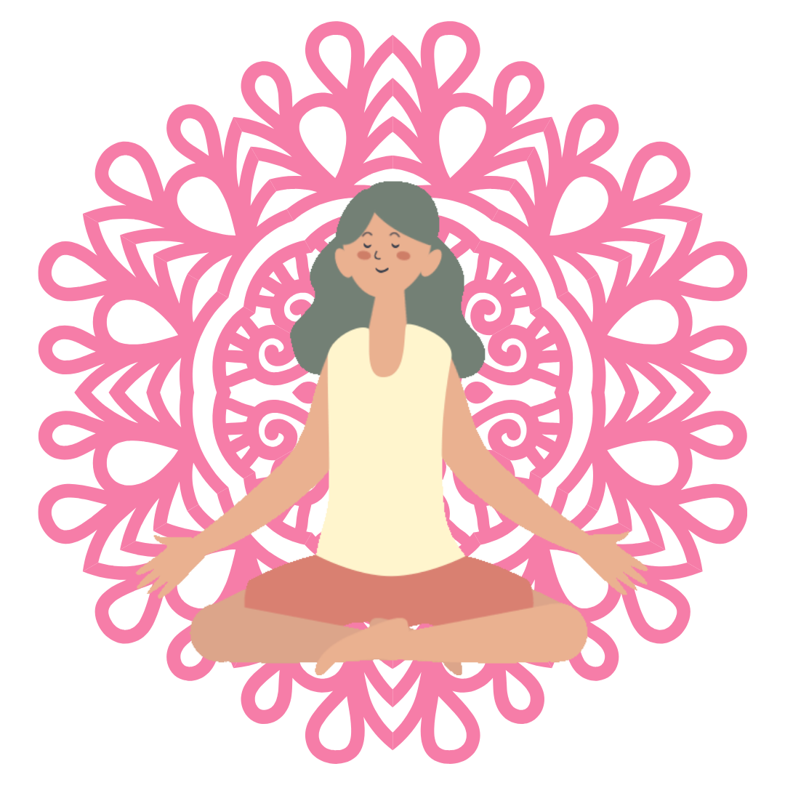

Hello.
I am Kris. I am a Scrum Master / Project Coordinator based in Cebu.
I love coffee, yoga, and the beach.
My Skills.
Scrum Master / Project Coordinator
I started my IT career in 2011. I experienced firmware development, KYC system testing and leading an onsite team in Japan. Adapting Agile, I am now actively taking the role of Scrum Master.

Yogi Stretch
As part of my journey to a peaceful heart and a better life, with the help of Youtube, I am now practicing yoga almost everyday. After that peace and quiet, I'd grab my mug and enjoy the rest of the day. Lovely, isn't it?